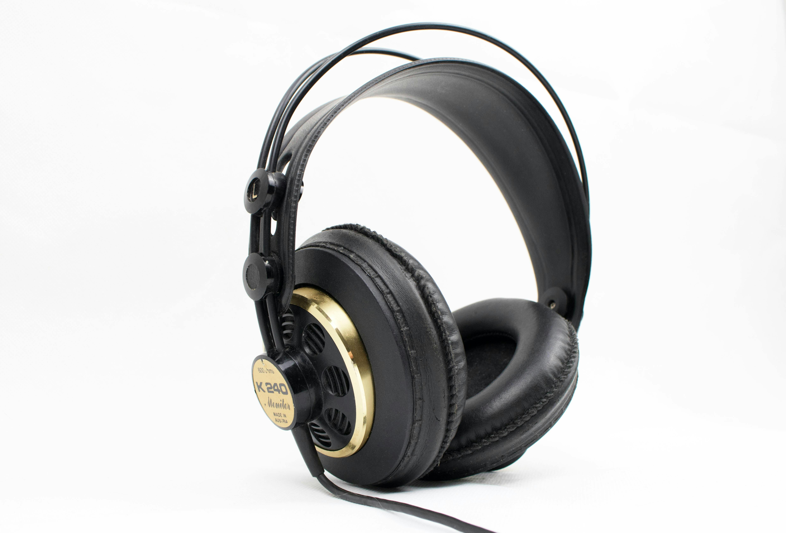

Razer Auriculares Gaming Kraken X Lite
Auriculares supraaurales con sistema acústico cerrado para aislamiento de sonido. Micrófono boom integrado con sensibilidad de -45 dB. Diseño ultraligero ideal para largas sesiones de gaming. Conectividad con cable para baja latencia.
$600 MXN
$510 MXN
-15%
Características Principales
- Micrófono boom integrado
- Sistema acústico cerrado
- Diseño ultraligero
- Frecuencia 12-28000 Hz